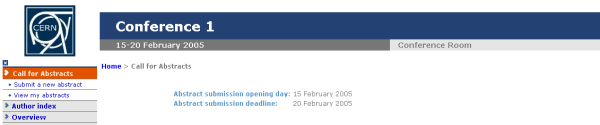
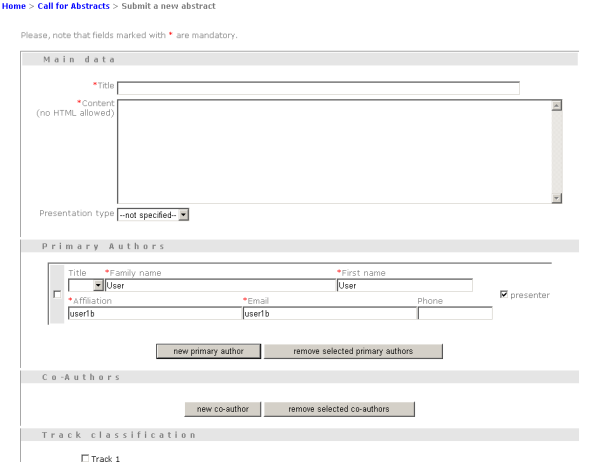
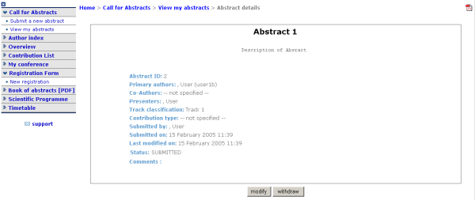
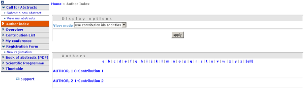
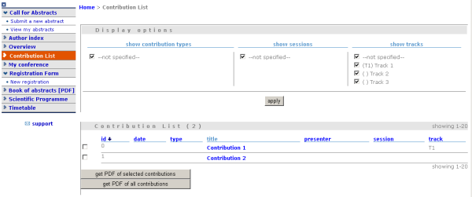
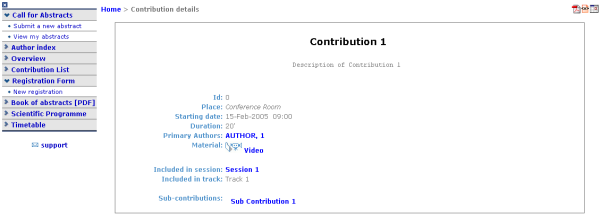
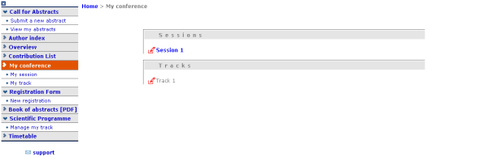
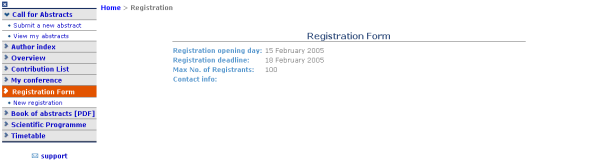
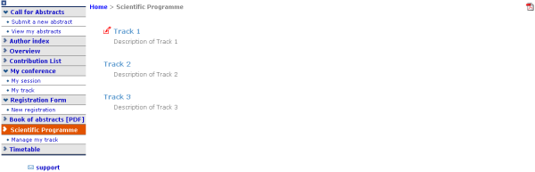
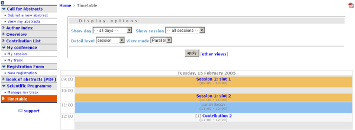

| Prev | Chapter 2. Conferences | Next |
The conference Display is the view that users of the conference will see. If the conference is public they will not need to login to view the conference. It is also the area in which you can access the modification areas if you have access rights. The different areas of the conference can be seen using the left hand Display Menu. This menu may be different if the Conference Manager has customised the menu. When a conference is accessed the 'Overview' area is shown first;
Various parts of the conference display are always present in order for you to navigate or view the display area:
 This is placed at the top left of the display view and will take you back to the top level home category
This is placed at the top left of the display view and will take you back to the top level home category
This will be underneath the display menu and enables you to email the event support if conference management have entered one
 This is placed at the bottom of all indico screens and enables you to email the administrator if the administrator has entered the address.
This is placed at the bottom of all indico screens and enables you to email the administrator if the administrator has entered the address.
 This is on the top of the display menu and enables you close the view of the menu.
This is on the top of the display menu and enables you close the view of the menu.
 This is placed at the top right of the screen and is the access for logging in or out
This is placed at the top right of the screen and is the access for logging in or out
 The navigation bar, shows you were you are in the conference and allows to back step through.
The navigation bar, shows you were you are in the conference and allows to back step through.
The Overview area shows the main details of the conference including any material that is included and the date and location of the conference.

When an administrator or Conference Manager is logged in there will be a modification icon next to the conference title for access to the modification area.
The call for abstracts view will show the range of dates in which an abstract can be submitted

From within the Call for abstracts a user can submit an abstract and view the abstracts they have submitted.
You need to be logged in as a user and the dates of submission must be in range to allow you to submit an abstract. Once logged in you can fill in the form to submit your abstract. (Some parts of the screen may not be visible in the pictures).

You need to fill in the title, content and author details. If you need to you can add any co-authors. You can also choose which track you would like your abstract to be included in as well as any comments you would like to add. A notification will be shown to you if your submission was received.
Any abstracts you have submitted you can view and see their status. You can also create a PDF of your abstracts. By clicking on the abstract name you will see the details of the abstract.

When you click on an abstracts title you will be taken to the abstracts view, this shows all the details of the abstract.

You can print the details of this abstract into a PDF using the icon in the top right corner.
The Author Index shows all the authors for contributions in the conference, the authors can be searched for by name.

The contribution(s) (See Contribution Display) they have written and the details of the author can be accessed by clicking on the name.
The Author Display shows the details for the author e.g. contact details and the contributions they have authored.

Contribution List in the menu takes you to all the contributions in the Conference. From here you can see a list of all or just certain types of contributions that you want to see for example only those contributions in a specific session.

You can access the display of each contribution by clicking on its name. You can also create a PDF of either selected contributions or all of them.
In the contribution display you can see all the details of the contribution, including the description, the author, the session (if any) that it is included in, any material(See contribution material display) it has and any sub contributions that belong to it. You can also access those details by clicking on their names. You can also print the contribution in PDF, XML or ICal format by using the icons in the top right hand corner.

If you have modification rights you will have the modification icon next to the print formats and you can access the contribution modification area.
The material that belongs to a contribution can be viewed by accessing the material in the contribution display. From the material display you can see the resources attached, and which contribution this material belongs to.

When you first open the material display, if there is only one resource attached, that resource will be opened e.g. If you have just the one link attached as a resource, when you access the material display the url for that link will be opened.
The 'My Conference' area gives you access to those areas you have Co-ordinator modification rights to. For example if you are a Track co-ordinator or a Session co-coordinator those tracks or sessions will appear under my conference.

From here you can access your Tracks Modification (See Tracks) or Session Modification (See My Conference - Session Co-ordination) by using the modification icon on the left of the title.
The session Modification accessible from 'My Conference' is slightly different from the Main Session Modification as you are restricted to the Main tab and adding /removing contributions and breaks:

The Registration Area shows you the dates in which you are able to register, the max number of registrants allowed and any contact information.

From the new registrant area people can fill in the forms that were chosen and customised from the Registration Management (See Registration Management).The registrant will need to fill in their personal information and anything else in the form that has been asked for.


Once submitted you will be shown a screen to confirm your registration.

The menu option which was 'new registrant' will also change to 'Modify my registration'. This will present you with the form you filled in originally and will allow you to change the information you originally provided.
The Book of Abstracts selection in the menu will produce a PDF document of all the accepted abstracts (abstracts that have become contributions) that are scheduled in the conference. It also shows any contributions that are scheduled.
The Scientific Programme shows all the tracks with their descriptions:

You can create a PDF document of all the tracks using the PDF icon in the top right hand corner If you are a Co-ordinator of any tracks, you will have the modification logo next to that track and a 'Manage my Track' option in the menu as in the picture above.
The Timetable area shows all the session/slots, contributions and breaks for the conference. You can access each session by clicking on the session name this will show you any contributions/breaks inside this session.

Clicking on a contribution name will take you to the display view of that contribution (See Contribution Display) You can display the timetable for certain days or sessions and choose the detail level using the display options you can also create a PDF of the timetable by using the icon in the top right hand corner
Session View allows you to see any contributions or breaks within each session:

If you are a Session Co-ordinator or a Session Manager you will have the modification icon in the top right hand corner as above, this will take you to the appropriate Modification area for that session. You may also make a PDF of the session.